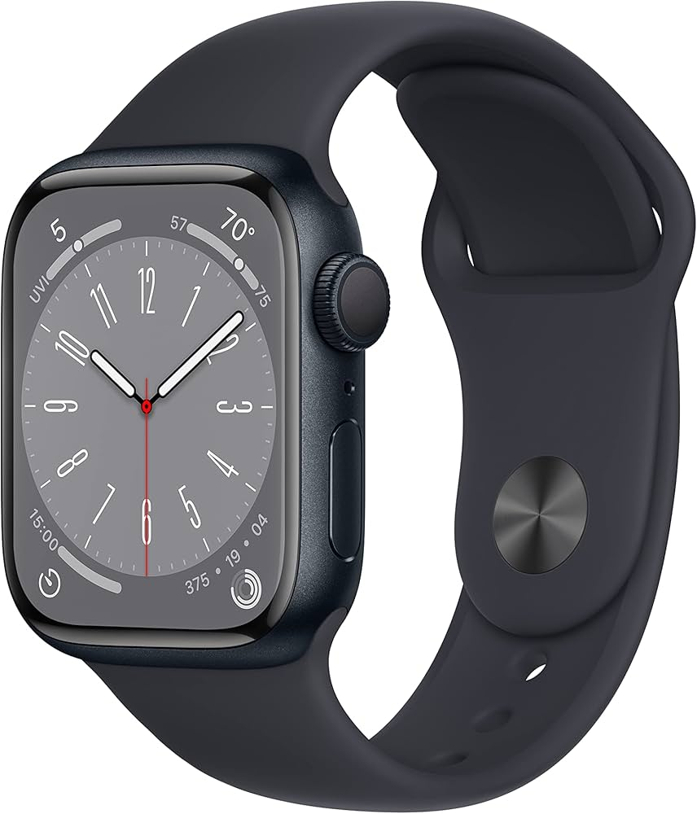
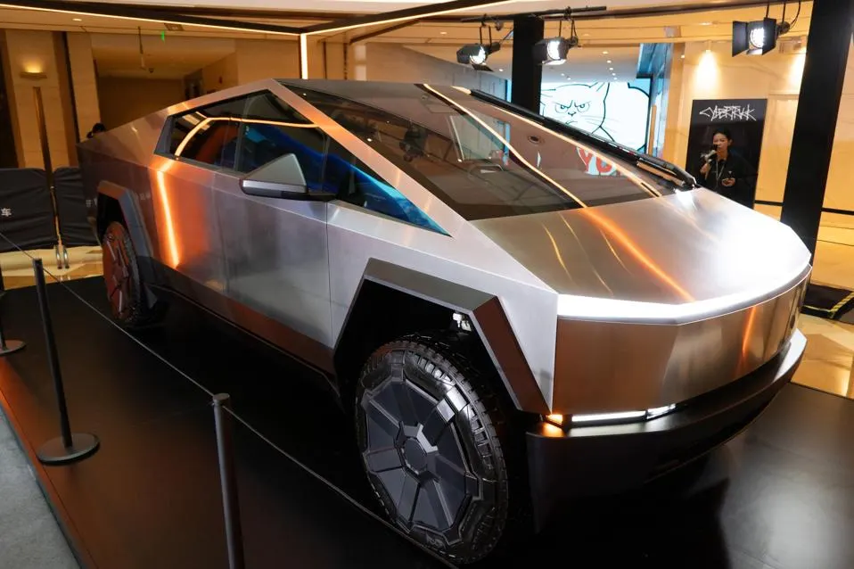

🎤 "Ladies and gentlemen, welcome to the world-famous Louvre Museum! Follow me closely, because we’re approaching one of the most iconic masterpieces in all of art history — the Mona Lisa!"
🎨 "Now, take a look just ahead — yes, that small painting behind the glass, always surrounded by a crowd. That’s her. The Mona Lisa. Painted by none other than Leonardo da Vinci, around the year 1503 to 1506 — although da Vinci, being the perfectionist he was, likely kept adding touches until about 1517."
🖼️ "What makes her so famous, you ask? Well, it’s not just her smile — though that mysterious, almost secretive grin is legendary. It’s the way her eyes seem to follow you, her lifelike presence, and the innovative painting techniques da Vinci used. This work is a stunning example of sfumato — that soft blending of colors that gives her skin its silky texture."
📏 "And yes, folks — she’s smaller than most expect! The painting is just 77 by 53 centimeters — about 30 by 21 inches. But don’t let the size fool you. She packs centuries of fascination into that frame."
🔍 "Art historians believe the model was Lisa Gherardini, the wife of a wealthy Florentine merchant — hence the name ‘Mona Lisa,’ which is short for ‘Madonna Lisa.’ But da Vinci never gave it to her family — he kept it with him until he died in France."
🖼️ "Today, she sits in this climate-controlled, bulletproof glass case, drawing more than 10 million visitors a year. And yes — she’s smiling at you too."
📸 "Feel free to take your photos, but remember: no flash! And when you're done, follow me — we've got thousands more treasures to discover!"
Papyrus of Ani
🎙️ Tour Guide Script – The Papyrus of Ani
Welcome, everyone! Gather 'round as we step back over 3,000 years into ancient Egypt—magic, and the afterlife.
Today, we're exploring one of the most beautiful and significant treasures of ancient Egyptian culture: The Papyrus of Ani.
📜 What Is It?
The Papyrus of Ani is a Book of the Dead—a funerary text created to guide the deceased through the treacherous journey of the afterlife.
Think of it as a spiritual map and survival guide, filled with spells, prayers, and illustrations.
This particular papyrus was made for a scribe named Ani, who lived around 1250 BCE during Egypt’s 19th Dynasty.
👨💼 Who Was Ani?
Ani was a high-ranking scribe in Thebes, likely someone of wealth and influence.
Because of his status, his Book of the Dead was incredibly lavish, written in cursive hieroglyphs and adorned with vivid, detailed illustrations—some of the finest ever discovered.
🎨 Highlights of the Scroll
The scroll itself is over 78 feet long and features scenes like:
• The Weighing of the Heart, where Ani’s heart is weighed against the feather of Ma’at, goddess of truth.
If balanced, he passes into the afterlife. If not... well, he’s devoured by the fearsome creature Ammit!
• Prayers to Ra, the sun god, to grant safe passage through the underworld.
• Spells for Transformation, like becoming a falcon or lotus, to navigate the spirit world more easily.
📍 Where Is It Now?
You can find this masterpiece at the British Museum in London, where it was brought in the late 19th century.
It was painstakingly unrolled, studied, and is now digitally preserved for the world to admire.
🎤 Fun Fact:
Despite being called the Book of the Dead, it’s actually more about life—eternal life.
It shows us how the Egyptians viewed death not as an end, but a transition.
So as we wrap up our journey, remember: this papyrus isn't just ink on scroll—
it’s a voice from across millennia, whispering secrets of an ancient world’s hopes, fears, and beliefs about what lies beyond.
Apple Watch Series 8

Welcome, my friend — you’re not just here for a watch... you’re here for the future on your wrist.
Apple Watch Series 8 — this isn’t just any smartwatch. This is a precision-engineered piece of wearable intelligence. Crafted with a sleek aluminum or stainless steel case, edge-to-edge always-on Retina display, and the kind of tech under the hood that makes it a silent powerhouse.
Health tracking? Boom. The Series 8 brings you an upgraded temperature sensor, perfect for cycle tracking and monitoring overnight changes like never before.
ECG? Blood Oxygen? Fall Detection? Crash Detection? All built-in. This isn’t just wellness — this is emergency-ready technology that can literally save your life.
Stay connected without reaching for your phone — take calls, reply to texts, stream music, even use Apple Pay — right from your wrist. With cellular models, leave your phone at home and still be 100% in the loop.
Under the hood? You’re working with the S8 SiP chip, fast, efficient, and optimized for smooth multitasking. Battery life? A full day — and with Low Power Mode, you’re getting up to 36 hours.
Style? Midnight, Starlight, Silver, and Product(RED) — match it with any band from sporty to luxurious and boom — you're flexing personal style and smart tech in one go.
So whether you're an athlete, a tech-head, or just someone who likes to stay one step ahead, the Series 8 isn’t just a smart choice — it's the smartest choice.
Ready to seal the deal? Because I’ve got one right here, ready to go home with you today — unbox the future.
Tesla Cybertruck

🚀 Welcome to the future of utility—meet the Tesla Cybertruck.
Forget everything you thought you knew about pickup trucks. The Cybertruck doesn’t just break the mold—it shatters it. With its radical design, military-grade toughness, and all-electric powertrain, this is a vehicle built for both rugged adventures and cutting-edge innovation.
🛡️ Ultra-Hard Exterior
This isn't your average truck body. The Cybertruck is made from cold-rolled stainless steel, the same material used in rockets. It’s dent-resistant, corrosion-resistant, and designed to take a beating. Tesla even showed it withstanding sledgehammers in testing—this thing means business.
💪 Extreme Performance
Need muscle? The Cybertruck can tow over 14,000 pounds and carry up to 3,500 pounds of payload. It accelerates from 0 to 60 in as little as 2.6 seconds in the tri-motor version—yes, faster than many sports cars, and it’s a truck.
🔋 Massive Range
With up to 500 miles of range on a single charge (tri-motor variant), you can take the Cybertruck across long distances without range anxiety. Whether you’re heading off-road or off-grid, it’s got you covered.
🧠 Tech-Savvy Interior
Inside the cabin, you’ll find a sleek, minimalistic design powered by a 17-inch touchscreen and seating for six. It’s futuristic yet functional, with Tesla's signature infotainment system and Full Self-Driving capability (optional), so your truck keeps getting better over time.
🌐 Versatility & Utility
From the retractable tonneau cover to the adaptive air suspension that adjusts ride height, the Cybertruck is engineered for flexibility. It features a built-in ramp, 120V/240V outlets, and even has room for a tent and a kitchen in the bed with Tesla’s optional camping setup.
🔌 Charge Anywhere
With access to the Tesla Supercharger network and options for solar integration, you’re never far from your next charge—even off the grid.
🔥 The Cool Factor
Let’s be honest—there’s nothing else like it on the road. Heads will turn, jaws will drop, and you’ll know you’re driving not just a truck—but a statement.